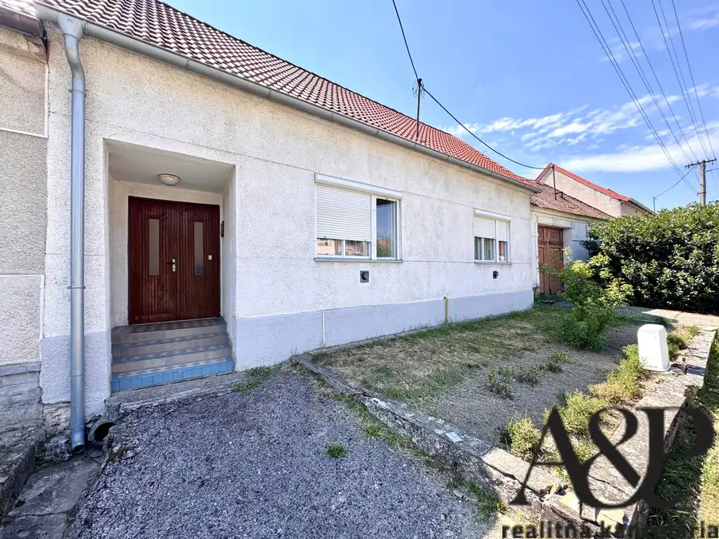
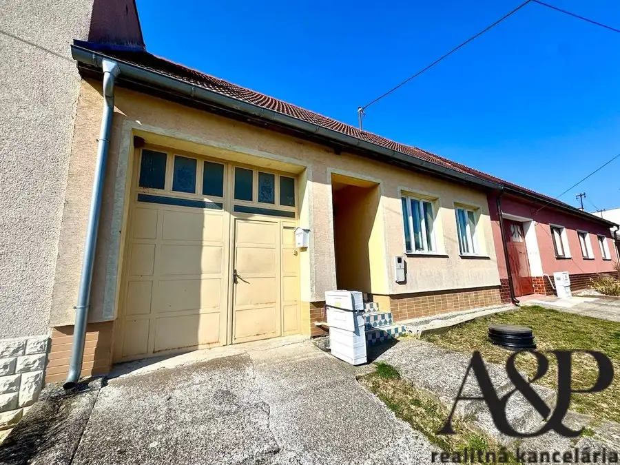
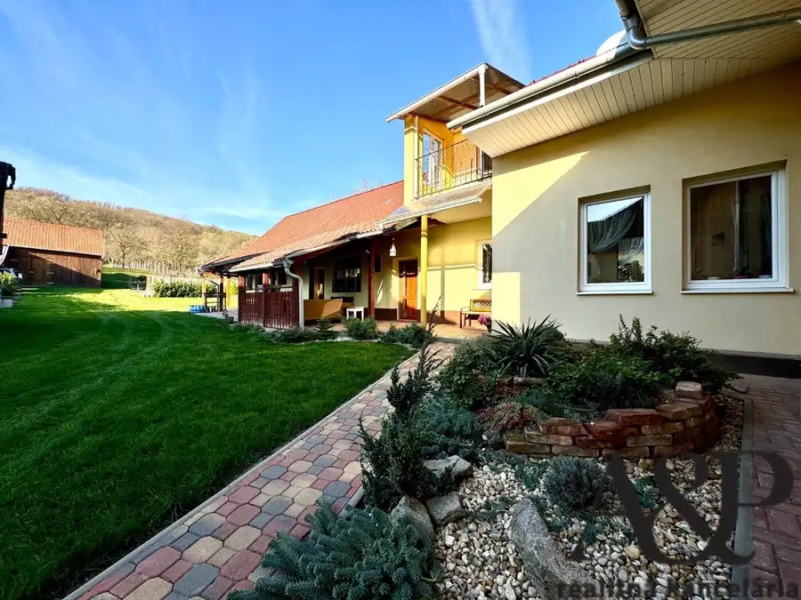

Na predaj rodinný dom s garážou, pozemok 1302m2, Bukovec, okr. Myjava
Bukovec
- Plocha80 m²
- StavPôvodný stav
O nehnuteľnosti
A&P REALITNÁ KANCELÁRIA Vám vo výhradnom zastúpení majiteľov ponúka na predaj rodinný dom s garážou, ktorý sa nachádza v obci Bukovec okr. Myjava. Trojizbový rodinný dom sa nachádza na pozemku s veľkorysými rozmermi, ktorý ponúka široké možnosti využitia. Využívaný môže byť na trvalé alebo víkendové bývanie.- podlahová plocha: cca 80m2- výmera pozemku: 1302m2- dom voľný: ihneďDISPOZÍCIA DOMU: 3 izby, kuchyňa, kúpeľňa, špajza, chodba, verandaVO DVORE sa nachádza garáž s rozmermi 5,1m x 2,8m a hospodárska časťINŽINIERSKE SIETE:- elektrina, plyn, obecný vodovodKONŠTRUKCIA: - zmiešaná konštrukcia- sedlová strecha- pálená strešná krytina- pôvodné drevené okná a plastové okná vo vstupnej chodbeVYKUROVANIE:- ústredné vykurovanie- plynové gamatyDOPLŇUJÚCE INFORMÁCIE O DOME:- vstup cez podbránie s možnosťou parkovania vo dvore alebo garáži- rodinný dom je v pôvodnom stave a určený na rekonštrukciu podľa vlastných predstáv- možnosť dispozičných zmien- priestranné izbyINFORMÁCIE O LOKALITE:Obec Bukovec sa nachádza v západnej časti Myjavskej pahorkatiny v nadmorskej výške približne 360 m n. m. Má okolo 400 – 430 obyvateľov a rozlohu približne 15,5 km². Ide o typickú kopaničiarsku obec s rozptýleným osídlením, ktorá ponúka pokojné vidiecke prostredie a kontakt s prírodou.OBČIANSKA VYBAVENOSŤ:-obecný úrad, potraviny, pošta, pohostinstvo / reštauračné služby, materská škola, futbalové ihrisko...Rozšírené služby (školy, zdravotníctvo, väčšie obchody) sú dostupné najmä v blízkom okresnom meste Myjava (cca 10 min autom).DOPRAVNÁ DOSTUPNOSŤ:-dobré napojenie na okresné mestá Myjava a Senica-dostupnosť autom aj autobusovou dopravouRegión je vhodný aj pre dochádzanie do väčších miest (Senica, Nové Mesto nad Váhom)Príroda a voľný čas-obec je obklopená lesmi a kopaničiarskou krajinou Myjavskej pahorkatiny-vhodné podmienky na turistiku, cyklistiku a rekreáciu-pokojné a tiché prostredie bez priemyselnej záťažeAk máte záujem o obhliadku neváhajte nás kontaktovať na tel. čísle 0917 330 172, emailom na adrese koprla@aprealestate.sk alebo osobne priamo u nás na pobočke A&P Real Estate ulici Námestie Oslobodenia 16 v Senici.Text a fotografie sú dielom a majetkom A&P real estate s.r.o.Ušetríme Vám čas aj peniaze - s najlepším financovaním Vám bezplatne pomôže náš hypotekárny špecialista. Zabezpečíme Vám kompletný právny servis prostredníctvom našej právnickej kancelárie, katastrálny servis, znalecký posudok. Vypracujeme odovzdávací protokol a zabezpečíme prepis energií.
Parametre
| Druh | Rodinný dom |
|---|---|
| Dátum zverejnenia | 4. 5. 2026 |
| Energetický certifikát budovy | nie je |
| Plocha pozemku | 1302 m² |
| Počet nadzemných podlaží | 1 |
| Stav nehnuteľnosti | Pôvodný stav |
| Terén pozemku | Mierne svahovitý |
| Typ | Predaj |
| Typ konštrukcie | Zmiešaná |
| Vykurovanie | Ústredné |
| Zastavaná plocha | 210 m² |
| Úžitková plocha | 80 m² |
Kde to je


Mohlo by Vás zaujímať

DomNové10 90 000 €Na predaj rodinný dom, pozemok 1066m2, Častkov okr. Senica Častkov 85 m² A&P REALITNÁ KANCELÁRIA Vám vo výhradnom zastúpení majiteľov ponúka na predaj čiastočne rekonštruovaný rodinný dom, ktorý sa nachádza v obci…
DomNové10 78 000 €Výrazná zľava 4 izb. rodinný dom, pozemok 1166m2, Lopašov okr. Skalica Lopašov 95 m² A&P REALITNÁ KANCELÁRIA Vám v zastúpení majiteľov ponúka na predaj čiastočne rekonštruovaný rodinný dom, ktorý sa nachádza v obci Lopašov…
DomNové10 285 000 €7 izbový rodinný dom-dve bytové jednotky, pozemok 3884m2, Prietrž, okr. Senica Prietrž 240 m² A&P REALITNÁ KANCELÁRIA vám vo výhradnom zastúpení majiteľa ponúka na predaj samostatne stojaci viacgeneračný murovaný rodinný dom, ktorý sa…